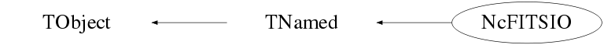

class NcFITSIO: public TNamed
Class NcFITSIO Class to provide an I/O facility for FITS data files. This class requires the CFITSIO library to be installed on your system. It is maintained by NASA and can be downloaded from : https://heasarc.gsfc.nasa.gov/docs/software/fitsio Note that on some operating systems (e.g. Ubuntu) facilities exist to automatically import the compiled library from server machines. The FITS reference manual is available via the link : https://heasarc.gsfc.nasa.gov/docs/software/fitsio/c/c_user/cfitsio.html Note : This class has been inspired by the code released on 19-jul-2010 by Claudi Martinez via the files TFITS.h and TFITS.cxx. NcFITSIO is an interface for the treatment of Flexible Image Transport System (FITS) files, which were initially used in astronomy. This file format was introduced in the late 70's and today it is widely used among scientists. FITS files can contain a large variety of (multi-dimensional) data like for instance spectra, data tables, histograms and multi-layered images. Furthermore, FITS data files are self explanatory since they contain human-readable information to allow the interpretation of the data within the FITS file. For example, a FITS file could contain a 3D data cube, but an additional description could indicate that it represents, for example, a 3-layer image. As such, it is very well suited to make experimental data available to the general community. The basic data entity is a so called Header-Data Unit (HDU) and the NcFITSIO facility provides several methods to access the data of the various HDUs that may be present in a FITS file. An HDU is a set of data with a header containing several tokens as "keyword = value". The header describes the data structure within the HDU. An HDU can be of two types: an "Image HDU" or a "Table HDU". The former can be any kind of multidimensional set of numerical values. So, an "Image" should be regarded as an N-dimensional data object, which may indeed contain a (multi-layered) image, but also the data of a matrix, a 1D, 2D or 3D histogram or even space-time detector signals. On the other hand, a Table is a set of several rows and columns (columns are also called fields) which contain generic data, such as strings, integer, real or even complex numbers. In a Table, a (row,column) element may also contain an array of data, which may even have a variable number of array elements for different rows. In this NCFITSIO2 facility, a Table is regarded as a 3D data cube, where a specific single data item is addressed as (row,column,layer). The convention is that all row, column and layer numbering starts at 1. Current limitations : - No support yet for complex values within data tables - No support yet for grouping - No interfaces have yet been implemented for writing FITS files Examples : Example 1 : The file contains only the primary HDU which consists of an image of NGC7662. We retrieve the first layer of the image array as a TASImage object and as a 2-dimensional histogram and display both on a canvas. For illustrative purposes we also retrieve the data as a matrix. gSystem->Load("ncfspack"); TString filename="$(ROOTSYS)/tutorials/fitsio/sample1.fits"; NcFITSIO q; if (!q.OpenInputFile(filename)) return; q.ListFileHeader(); Double_t thres=1000; // Threshold for pixel value Double_t max=1; // Rescale pixel values to [0,max] TASImage im; q.GetImageLayer(im,1,&thres,max); // Image with threshold and rescaling TH2D hist; q.GetImageLayer(hist,1,0,max); // Histogram with only rescaling TMatrixD m; q.GetImageLayer(m,1); // Matrix without threshold and rescaling TCanvas* c1=new TCanvas("c1","NcFITSIO Example 1: Image from layer"); im.Draw(); TCanvas* c2=new TCanvas("c2","NcFITSIO Example 1: Histogram from layer"); hist.Draw("COLZ"); Example 2 : The primary HDU is an array of 2 rows by 2040 columns, which represent a radiation spectrum. The first row contains the flux data, whereas the second row the wavelengths. We will extract the data and show the flux vs. wavelength graph on a canvas. Data copyright: NASA. gSystem->Load("ncfspack"); TString filename="$(ROOTSYS)/tutorials/fitsio/sample2.fits"; NcFITSIO q; if (!q.OpenInputFile(filename)) return; q.ListFileHeader(0); q.ListHDUHeader(); Int_t dim=q.GetImageDimension(); // The dimension "N" of the N-dimensional data object Int_t nmeas=q.GetImageDimension(1); // The number of measurements (i.e. columns) TArrayI ifirst(dim); // Array to indicate the starting point for reading in each dimension TArrayD a1; // Array to hold the data of row 1 ifirst.SetAt(1,0); // Start index 1 of dimension 1 (i.e. columnn 1) ifirst.SetAt(1,1); // Start at index 1 of dimension 2 (i.e. row 1) q.GetImageArray(a1,ifirst,nmeas); TArrayD a2; // Array to hold the data of row 2 ifirst.SetAt(1,0); // Start at index 1 of dimension 1 (i.e. column 1) ifirst.SetAt(2,1); // Start at index 2 of dimension 2 (i.e. row 2) q.GetImageArray(a2,ifirst,nmeas); TGraph* gr=new TGraph(nmeas,a2.GetArray(),a1.GetArray()); TCanvas* c1=new TCanvas("c1","NcFITSIO Example 2: Spectrum from Image data"); gr->Draw("AP"); Example 3 : The primary HDU contains an array representing a flux vs. wavelength spectrum. The extension #1 contains a data table with 2 rows. We will read from the table row(s) the column named DATAMAX. Data copyright: NASA. gSystem->Load("ncfspack"); TString filename="$(ROOTSYS)/tutorials/fitsio/sample2.fits"; NcFITSIO q; if (!q.OpenInputFile(filename)) return; q.ListFileHeader(0); // Open the extension #1 which contains the data table if (!q.SelectHDU(1)) return; q.ListTable(); // List the table column description q.ListTable(10); // List the table contents // Retrieve the actual values of the column named DATAMAX. TString colname="DATAMAX"; TArrayD darr; // Array to hold the actual data q.GetTableColumn(darr,colname); // List the contents of the retrieved data array cout << endl; cout << " Data contents of the column " << colname << endl; for (Int_t i=1; i<=darr.GetSize(); i++) { cout << " Row:" << i << " value:" << darr.At(i-1) << endl; } Example 4 : The primary HDU contains an array representing a flux vs. wavelength spectrum. The extension #1 contains a data table with 2 rows. We will read only the row(s) that have a column named DATAMAX with a value greater than 2e-15. Data copyright: NASA. gSystem->Load("ncfspack"); TString filename="$(ROOTSYS)/tutorials/fitsio/sample2.fits"; NcFITSIO q; if (!q.OpenInputFile(filename)) return; q.ListFileHeader(0); // Open the extension #1 which contains the data table with a selection filter if (!q.SelectHDU("[1][DATAMAX>2e-15]")) return; q.ListTable(); // List the table column description q.ListTable(10); // List the table contents // Retrieve the actual values of the column named DATAMAX. TString colname="DATAMAX"; TArrayD darr; // Array to hold the actual data q.GetTableColumn(darr,colname); // List the contents of the retrieved data array cout << endl; cout << " Data contents of the column " << colname << endl; for (Int_t i=1; i<=darr.GetSize(); i++) { cout << " Row:" << i << " value:" << darr.At(i-1) << endl; } Example 5 : The primary HDU contains an array representing a flux vs. wavelength spectrum. The extension #1 contains a data table with 9 rows and 8 columns. Column 4 has the name "mag" and contains a vector of 6 numeric components. We will read the "mag" values of the first 5 rows. The "mag" values of rows 1 and 2 are : Row1: (99.0, 24.768, 23.215, 21.68, 21.076, 20.857) Row2: (99.0, 21.689, 20.206, 18.86, 18.32 , 18.128) gSystem->Load("ncfspack"); TString filename="$(ROOTSYS)/tutorials/fitsio/sample4.fits"; NcFITSIO q; if (!q.OpenInputFile(filename)) return; q.ListFileHeader(); // Open the extension #1 which contains the data table if(!q.SelectHDU(1)) return; q.ListTable(); // List the table column description q.ListTable(10); // List the table contents // Read the "mag" values of rows 1 to 5 (incl.) TArrayD arr; for (Int_t jrow=1; jrow<=5; jrow++) { q.GetTableCell(arr,jrow,"mag"); // List the contents of the data array cout << endl; cout << " \"mag\" data contents of Row:" << jrow << endl; for (Int_t i=1; i<=arr.GetSize(); i++) { cout << " " << arr.At(i-1); } cout << endl; } --- Author: Nick van Eijndhoven March 13, 2019 03:40 IIHE-VUB, Brussel - Modified: Nick van Eijndhoven April 12, 2019 10:25 IIHE-VUB, Brussel
Function Members (Methods)
public:
| NcFITSIO(const NcFITSIO& q) | |
| NcFITSIO(const char* name = "NcFITSIO", const char* title = "FITS data I/O interface") | |
| virtual | ~NcFITSIO() |
| void | TObject::AbstractMethod(const char* method) const |
| virtual void | TObject::AppendPad(Option_t* option = "") |
| virtual void | TObject::Browse(TBrowser* b) |
| static TClass* | Class() |
| virtual const char* | TObject::ClassName() const |
| virtual void | TNamed::Clear(Option_t* option = "") |
| virtual TObject* | Clone(const char* name = "") const |
| virtual Int_t | TNamed::Compare(const TObject* obj) const |
| virtual void | TNamed::Copy(TObject& named) const |
| virtual void | TObject::Delete(Option_t* option = "")MENU |
| virtual Int_t | TObject::DistancetoPrimitive(Int_t px, Int_t py) |
| virtual void | TObject::Draw(Option_t* option = "") |
| virtual void | TObject::DrawClass() constMENU |
| virtual TObject* | TObject::DrawClone(Option_t* option = "") constMENU |
| virtual void | TObject::Dump() constMENU |
| virtual void | TObject::Error(const char* method, const char* msgfmt) const |
| virtual void | TObject::Execute(const char* method, const char* params, Int_t* error = 0) |
| virtual void | TObject::Execute(TMethod* method, TObjArray* params, Int_t* error = 0) |
| virtual void | TObject::ExecuteEvent(Int_t event, Int_t px, Int_t py) |
| virtual void | TObject::Fatal(const char* method, const char* msgfmt) const |
| virtual void | TNamed::FillBuffer(char*& buffer) |
| virtual TObject* | TObject::FindObject(const char* name) const |
| virtual TObject* | TObject::FindObject(const TObject* obj) const |
| TString | GetColumnName(Int_t colnum) const |
| Int_t | GetColumnNumber(TString colname, Int_t mode = 0) const |
| virtual Option_t* | TObject::GetDrawOption() const |
| static Long_t | TObject::GetDtorOnly() |
| virtual const char* | TObject::GetIconName() const |
| UInt_t | GetImageArray(TArrayD& arr, TArrayI ifirst, UInt_t npix) |
| UInt_t | GetImageArray(TArrayD& arr, TArrayI ifirst, TArrayI ilast, TArrayI incr) |
| Int_t | GetImageDimension(Int_t i = 0) const |
| Int_t | GetImageLayer(TASImage& im, Int_t layer = 1, Double_t* thres = 0, Double_t max = -1) |
| Int_t | GetImageLayer(TMatrixD& m, Int_t layer = 1, Double_t* thres = 0, Double_t max = -1) |
| Int_t | GetImageLayer(TH2D& his, Int_t layer = 1, Double_t* thres = 0, Double_t max = -1) |
| TString | GetKeywordValue(TString keyname, Int_t mode = 0) |
| virtual const char* | TNamed::GetName() const |
| virtual char* | TObject::GetObjectInfo(Int_t px, Int_t py) const |
| static Bool_t | TObject::GetObjectStat() |
| virtual Option_t* | TObject::GetOption() const |
| Int_t | GetTableCell(TArrayD& arr, Int_t row, Int_t col) |
| Int_t | GetTableCell(TString*& arr, Int_t row, Int_t col) |
| Int_t | GetTableCell(TObjArray& arr, Int_t row, Int_t col) |
| Int_t | GetTableCell(Double_t& val, Int_t row, Int_t col, Int_t layer = 1) |
| Int_t | GetTableCell(TArrayD& arr, Int_t row, TString colname, Int_t mode = 0) |
| Int_t | GetTableCell(TString& str, Int_t row, Int_t col, Int_t layer = 1) |
| Int_t | GetTableCell(TString*& arr, Int_t row, TString colname, Int_t mode = 0) |
| Int_t | GetTableCell(TObjArray& arr, Int_t row, TString colname, Int_t mode = 0) |
| Int_t | GetTableCell(Double_t& val, Int_t row, TString colname, Int_t layer = 1, Int_t mode = 0) |
| Int_t | GetTableCell(TString& str, Int_t row, TString colname, Int_t layer = 1, Int_t mode = 0) |
| Int_t | GetTableColumn(TArrayD& arr, Int_t col, Int_t rstart = 1, Int_t rend = 0, Int_t layer = 1) |
| Int_t | GetTableColumn(TString*& arr, Int_t col, Int_t rstart = 1, Int_t rend = 0, Int_t layer = 1) |
| Int_t | GetTableColumn(TObjArray& arr, Int_t col, Int_t rstart = 1, Int_t rend = 0, Int_t layer = 1) |
| Int_t | GetTableColumn(TArrayD& arr, TString colname, Int_t rstart = 1, Int_t rend = 0, Int_t layer = 1, Int_t mode = 0) |
| Int_t | GetTableColumn(TString*& arr, TString colname, Int_t rstart = 1, Int_t rend = 0, Int_t layer = 1, Int_t mode = 0) |
| Int_t | GetTableColumn(TObjArray& arr, TString colname, Int_t rstart = 1, Int_t rend = 0, Int_t layer = 1, Int_t mode = 0) |
| Int_t | GetTableNcolumns() const |
| Int_t | GetTableNrows() const |
| virtual const char* | TNamed::GetTitle() const |
| virtual UInt_t | TObject::GetUniqueID() const |
| virtual Bool_t | TObject::HandleTimer(TTimer* timer) |
| virtual ULong_t | TNamed::Hash() const |
| virtual void | TObject::Info(const char* method, const char* msgfmt) const |
| virtual Bool_t | TObject::InheritsFrom(const char* classname) const |
| virtual Bool_t | TObject::InheritsFrom(const TClass* cl) const |
| virtual void | TObject::Inspect() constMENU |
| void | TObject::InvertBit(UInt_t f) |
| virtual TClass* | IsA() const |
| virtual Bool_t | TObject::IsEqual(const TObject* obj) const |
| virtual Bool_t | TObject::IsFolder() const |
| Bool_t | TObject::IsOnHeap() const |
| virtual Bool_t | TNamed::IsSortable() const |
| Bool_t | TObject::IsZombie() const |
| void | ListFileHeader(Int_t mode = 1) const |
| void | ListHDUHeader() const |
| void | ListTable(Int_t width = -10, Int_t rstart = 1, Int_t rend = 0, Int_t cstart = 1, Int_t cend = 0) |
| virtual void | TNamed::ls(Option_t* option = "") const |
| void | TObject::MayNotUse(const char* method) const |
| virtual Bool_t | TObject::Notify() |
| void | TObject::Obsolete(const char* method, const char* asOfVers, const char* removedFromVers) const |
| Bool_t | OpenInputFile(TString specs) |
| static void | TObject::operator delete(void* ptr) |
| static void | TObject::operator delete(void* ptr, void* vp) |
| static void | TObject::operator delete[](void* ptr) |
| static void | TObject::operator delete[](void* ptr, void* vp) |
| void* | TObject::operator new(size_t sz) |
| void* | TObject::operator new(size_t sz, void* vp) |
| void* | TObject::operator new[](size_t sz) |
| void* | TObject::operator new[](size_t sz, void* vp) |
| NcFITSIO& | operator=(const NcFITSIO&) |
| virtual void | TObject::Paint(Option_t* option = "") |
| virtual void | TObject::Pop() |
| virtual void | TNamed::Print(Option_t* option = "") const |
| virtual Int_t | TObject::Read(const char* name) |
| virtual void | TObject::RecursiveRemove(TObject* obj) |
| void | TObject::ResetBit(UInt_t f) |
| virtual void | TObject::SaveAs(const char* filename = "", Option_t* option = "") constMENU |
| virtual void | TObject::SavePrimitive(ostream& out, Option_t* option = "") |
| Bool_t | SelectHDU(TString extname = "[0]") |
| Bool_t | SelectHDU(Int_t extnumber) |
| void | TObject::SetBit(UInt_t f) |
| void | TObject::SetBit(UInt_t f, Bool_t set) |
| virtual void | TObject::SetDrawOption(Option_t* option = "")MENU |
| static void | TObject::SetDtorOnly(void* obj) |
| virtual void | TNamed::SetName(const char* name)MENU |
| virtual void | TNamed::SetNameTitle(const char* name, const char* title) |
| static void | TObject::SetObjectStat(Bool_t stat) |
| virtual void | TNamed::SetTitle(const char* title = "")MENU |
| virtual void | TObject::SetUniqueID(UInt_t uid) |
| virtual void | ShowMembers(TMemberInspector&) |
| virtual Int_t | TNamed::Sizeof() const |
| virtual void | Streamer(TBuffer&) |
| void | StreamerNVirtual(TBuffer& ClassDef_StreamerNVirtual_b) |
| virtual void | TObject::SysError(const char* method, const char* msgfmt) const |
| Bool_t | TObject::TestBit(UInt_t f) const |
| Int_t | TObject::TestBits(UInt_t f) const |
| virtual void | TObject::UseCurrentStyle() |
| virtual void | TObject::Warning(const char* method, const char* msgfmt) const |
| virtual Int_t | TObject::Write(const char* name = 0, Int_t option = 0, Int_t bufsize = 0) |
| virtual Int_t | TObject::Write(const char* name = 0, Int_t option = 0, Int_t bufsize = 0) const |
protected:
| void | ApplyPixelThreshold(TArrayD& arr, Double_t thres) |
| virtual void | TObject::DoError(int level, const char* location, const char* fmt, va_list va) const |
| void | Initialize() |
| Bool_t | LoadHeaderInfo() |
| Int_t | LoadLayer(TArrayD& arr, Int_t layer) |
| void | TObject::MakeZombie() |
| void | RescalePixels(TArrayD& arr, Double_t max) |
| void | Reset() |
| TString | StripFilter(TString filename) const |
Data Members
public:
| enum eHDUTypes { | kImageHDU | |
| kTableHDU | ||
| }; | ||
| enum eColumnTypes { | kString | |
| kStringArray | ||
| kRealNumber | ||
| kRealArray | ||
| kComplexNumber | ||
| kComplexArray | ||
| }; | ||
| enum TObject::EStatusBits { | kCanDelete | |
| kMustCleanup | ||
| kObjInCanvas | ||
| kIsReferenced | ||
| kHasUUID | ||
| kCannotPick | ||
| kNoContextMenu | ||
| kInvalidObject | ||
| }; | ||
| enum TObject::[unnamed] { | kIsOnHeap | |
| kNotDeleted | ||
| kZombie | ||
| kBitMask | ||
| kSingleKey | ||
| kOverwrite | ||
| kWriteDelete | ||
| }; |
protected:
| Int_t* | fColumnLayers | The number of layers of the table column |
| TString* | fColumnNames | The names of the table columns |
| NcFITSIO::eColumnTypes* | fColumnTypes | The types of the table columns |
| TString* | fComments | The HDU (key) comments |
| TString | fExtensionName | The HDU extension Name |
| Int_t | fExtensionNumber | The HDU extension number (0=PRIMARY) |
| TString | fFilename | The (full path) name of the FITS file on the computer system |
| TString | fFilenameFilter | The FITS filename with the HDU selection filter |
| fitsfile* | fInput | Pointer to the FITS input file |
| TString* | fKeyNames | The HDU key names |
| TString* | fKeyValues | The HDU key values |
| TString | TNamed::fName | object identifier |
| Int_t | fNcolumns | The number of table columns |
| Int_t | fNkeys | The number of HDU keywords |
| Int_t | fNrows | The number of table rows |
| fitsfile* | fOutput | Pointer to the FITS output file |
| TArrayI* | fSizes | Image sizes in each dimension |
| TString | TNamed::fTitle | object title |
| NcFITSIO::eHDUTypes | fType | The HDU type |
Class Charts
{kind=link}
{kind=link}
{kind=link}
{kind=link}

Function documentation
NcFITSIO(const char* name = "NcFITSIO", const char* title = "FITS data I/O interface")
Default constructor
Bool_t OpenInputFile(TString specs)
Open a FITS input file and indicate success (kRUE) or failure (kFALSE) via the boolean return value. The input argument "specs" indicates the FITS input filename with an optional Header Data Unit (HDU) selection filter. Examples of "specs" format: "myfile.fits" // Open the PRIMARY HDU of file "myfile.fits" "myfile.fits[1]" // Open the HDU of extension #1 in file "myfile.fits" "myfile.fits[SPECTRUM]" // Open the HDU called "SPECTRUM" in file "myfile.fits" "myfile.fits[HUBBLE][#row<10]" // Open the HDU called "HUBBLE" and select only row numbers <10 "myfile.fits[HUBBLE][RA>0.5]" // Open the HDU called "HUBBLE" and select only those rows that have in the column named "RA" values >0.5 For further details on HDU selection filters please refer to: https://heasarc.gsfc.nasa.gov/docs/software/fitsio/c/c_user/cfitsio.html Notes : 1) Environment variables may be used as $(...) in the filenname for convenience. For example "$(ROOTSYS)/tutorials/fitsio/sample1.fits". 2) A specifiec HDU can also be selected by invoking the memberfunction SelectHDU() after a FITS input file has been opened.
TString StripFilter(TString filename) const
Strip the (optional) HDU filter selection string from the filename.
Bool_t LoadHeaderInfo()
Load the header records of the current HDU and indicate success (kRUE) or failure (kFALSE) via the boolean return value.
Bool_t SelectHDU(TString extname = "[0]")
Select the HDU with the specified extension name and indicate success (kTRUE) or failure (kFALSE) via the boolean return value. Examples for extension name specifications : "[HUBBLE]" will select the HDU stored as [HUBBLE]. "[HUBBLE][#row<10]" will select the HDU stored as [HUBBLE] and select only row numbers <10 "[HUBBLE][RA>0.5]" will select the HDU stored as [HUBBLE] and select only those rows that have in column "RA" values >0.5 For further details on HDU selection filters please refer to: https://heasarc.gsfc.nasa.gov/docs/software/fitsio/c/c_user/cfitsio.html The default value is extname="[0]", which is the primary HDU.
Bool_t SelectHDU(Int_t extnumber)
Select the HDU with the specified extension number and indicate success (kRUE) or failure (kFALSE) via the boolean return value. Example : extnumber=3 will select the HDU stored as [3]. The primary HDU is stored as [0]. For a more elaborate HDU selection, please refer to the SelectHDU() memberfunction that selects the HDU via a name specification.
TString GetKeywordValue(TString keyname, Int_t mode = 0)
Provide a TString with the value of the HDU keyword with the specified name. If no match is found, an empty string is returned. mode = 0 --> The HDU keyword name should match exactly the provided "keyname" 1 --> The HDU keyword name only has to contain the provided "keyname" pattern. The default value is mode=0. Notes : 1) Leading and trailing blanks and single quotes will be removed from the value string. For example, the HDU keyword value 'Zenith ' will be provided as TString="Zenith". 2) Conversion from a TString to a numerical value can easily be obtained via the TString memberfunctions Atof(), Atoi() and Atoll().
Int_t GetColumnNumber(TString colname, Int_t mode = 0) const
Provide the number of the first table column that matches the provided name pattern. Column numbers start at 1. If no match is found, the value 0 is returned. mode = 0 --> The column name should match exactly the provided "colname" 1 --> The column name only has to contain the provided "colname" pattern. The default value is mode=0.
TString GetColumnName(Int_t colnum) const
Provide the name of the table column with number "colnum".
Column numbers start at 1.
In case of inconsistent data an empty string is returned.
Int_t GetTableCell(Double_t& val, Int_t row, Int_t col, Int_t layer = 1)
Provide the real number value of the cell (row,col,layer) in a table. A table element is identified via the usual (row,column) indication. If the table element contains an array of data, the array components are considered as layers, where layer=n represents the n-th component of the array. The dimension of the full array is reflected by the return argument, which in case of a single data element is 1. The row, column and layer counting starts at 1. The default value is layer=1. In case of inconsistent data the value 0 is provided with 0 as return argument.
Int_t GetTableCell(Double_t& val, Int_t row, TString colname, Int_t layer = 1, Int_t mode = 0)
Provide the real number value of the cell matching the row number "row", column name (pattern) "colname" and layer number "layer" in a table. A table element is identified via the usual (row,column) indication. If the table element contains an array of data, the array components are considered as layers, where layer=n represents the n-th component of the array. The dimension of the full array is reflected by the return argument, which in case of a single data element is 1. mode = 0 --> The column name should match exactly the provided "colname" 1 --> The column name only has to contain the provided "colname" pattern. The row, column and layer counting starts at 1. The default values are layer=1 and mode=0. In case of inconsistent data the value 0 is provided with 0 as return argument.
Int_t GetTableCell(TArrayD& arr, Int_t row, Int_t col)
Provide via array "arr" the real number value(s) of the cell (row,col) in a table. The row and column counting starts at 1. The integer return argument represents the number of array elements. In case of inconsistent data an empty array "arr" is provided with 0 as return argument.
Int_t GetTableCell(TArrayD& arr, Int_t row, TString colname, Int_t mode = 0)
Provide via array "arr" the real number value(s) of the cell matching the row number "row" and column name (pattern) "colname" in a table. The row and column counting starts at 1. mode = 0 --> The column name should match exactly the provided "colname" 1 --> The column name only has to contain the provided "colname" pattern. The default value is mode=0. The integer return argument represents the number of array elements. In case of inconsistent data an empty array "arr" is provided with 0 as return argument.
Int_t GetTableCell(TString& str, Int_t row, Int_t col, Int_t layer = 1)
Provide the data item from the cell (row,col,layer) in a table as a TString.
A table element is identified via the usual (row,column) indication.
If the table element contains an array of data, the array components are
considered as layers, where layer=n represents the n-th component of the array.
The dimension of the full array is reflected by the return argument,
which in case of a single data element is 1.
The row, column and layer counting starts at 1.
The default value is layer=1.
In case of inconsistent data an empty string is provided with 0 as return argument.
Notes :
1) Any table data item can be obtained as a TString.
2) Conversion from a TString to a numerical value can easily be obtained
via the TString memberfunctions Atof(), Atoi() and Atoll().
Int_t GetTableCell(TString& str, Int_t row, TString colname, Int_t layer = 1, Int_t mode = 0)
Provide the data item of the cell matching the row number "row", column name (pattern) "colname" and layer number "layer" in a table as a TString. A table element is identified via the usual (row,column) indication. If the table element contains an array of data, the array components are considered as layers, where layer=n represents the n-th component of the array. The dimension of the full array is reflected by the return argument, which in case of a single data element is 1. mode = 0 --> The column name should match exactly the provided "colname" 1 --> The column name only has to contain the provided "colname" pattern. The row, column and layer counting starts at 1. The default values are layer=1 and mode=0. In case of inconsistent data an empty string is provided with 0 as return argument. Notes : 1) Any table data item can be obtained as a TString. 2) Conversion from a TString to a numerical value can easily be obtained via the TString memberfunctions Atof(), Atoi() and Atoll().
Int_t GetTableCell(TString*& arr, Int_t row, Int_t col)
Provide via the TString array "arr" the content(s) of the cell (row,col) in a table. The row and column counting starts at 1. The integer return argument represents the number of array elements. In case of inconsistent data an array with 1 empty string is provided and 0 as return argument. Notes : 1) Any table data item can be obtained as a TString. 2) Conversion from a TString to a numerical value can easily be obtained via the TString memberfunctions Atof(), Atoi() and Atoll(). 3) This memberfunction produces a newly created TString array, so to prevent a memory leak, the user should invoke the "delete[]" operator when the array is not needed anymore. 4) To obtain an array with automatic memory management and size indication, the user is referred to the corresponding GetTableCell(TObjArray,...) memberfunction.
Int_t GetTableCell(TString*& arr, Int_t row, TString colname, Int_t mode = 0)
Provide via the TString array "arr" the content(s) of the cell matching the row number "row" and column name (pattern) "colname" in a table. The row and column counting starts at 1. mode = 0 --> The column name should match exactly the provided "colname" 1 --> The column name only has to contain the provided "colname" pattern. The default value is mode=0. The integer return argument represents the number of array elements. In case of inconsistent data an array with 1 empty string is provided and 0 as return argument. Notes : 1) Any table data item can be obtained as a TString. 2) Conversion from a TString to a numerical value can easily be obtained via the TString memberfunctions Atof(), Atoi() and Atoll(). 3) This memberfunction produces a newly created TString array, so to prevent a memory leak, the user should invoke the "delete[]" operator when the array is not needed anymore. 4) To obtain an array with automatic memory management and size indication, the user is referred to the corresponding GetTableCell(TObjArray,...) memberfunction.
Int_t GetTableCell(TObjArray& arr, Int_t row, Int_t col)
Provide via an array of TObjString objects the content(s) of the cell (row,col) in a table.
The row and column counting starts at 1.
The integer return argument represents the number of array elements.
In case of inconsistent data an empty array is provided and 0 as return argument.
Notes :
1) Any table data item can be obtained as a TString.
2) Conversion from a TString to a numerical value can easily be obtained
via the TString memberfunctions Atof(), Atoi() and Atoll().
Int_t GetTableCell(TObjArray& arr, Int_t row, TString colname, Int_t mode = 0)
Provide via an array of TObjString objects the content(s) of the cell matching the row number "row" and column name (pattern) "colname" in a table. The row and column counting starts at 1. mode = 0 --> The column name should match exactly the provided "colname" 1 --> The column name only has to contain the provided "colname" pattern. The default value is mode=0. The integer return argument represents the number of array elements. In case of inconsistent data an empty array provided and 0 as return argument. Notes : 1) Any table data item can be obtained as a TString. 2) Conversion from a TString to a numerical value can easily be obtained via the TString memberfunctions Atof(), Atoi() and Atoll().
Int_t GetTableColumn(TArrayD& arr, Int_t col, Int_t rstart = 1, Int_t rend = 0, Int_t layer = 1)
Provide via array "arr" the real number values for row=[rstart,rend], column=col and layer number "layer". A table element is identified via the usual (row,column) indication. If the table element contains an array of data, the array components are considered as layers, where layer=n represents the n-th component of the array. Input arguments : arr : The array to contain the retrieved real numbers col : The requested column number (first column is col=1) rstart : Row number to start with (first row is rstart=1) rend : Row number to end with (rend=0 will process until the last row) layer : The layer number The default values are rstart=1, rend=0 and layer=1. The integer return argument represents the number of array elements. In case of inconsistent data an empty array "arr" is provided with 0 as return argument.
Int_t GetTableColumn(TArrayD& arr, TString colname, Int_t rstart = 1, Int_t rend = 0, Int_t layer = 1, Int_t mode = 0)
Provide via array "arr" the real number values for row=[rstart,rend], the column for which the name matches the name (pattern) "colname" and the layer number "layer". A table element is identified via the usual (row,column) indication. If the table element contains an array of data, the array components are considered as layers, where layer=n represents the n-th component of the array. Input arguments : arr : The array to contain the retrieved real numbers colname : The requested column name (pattern) rstart : Row number to start with (first row is rstart=1) rend : Row number to end with (rend=0 will process until the last row) layer : The layer number mode : 0 --> The column name should match exactly the provided "colname" 1 --> The column name only has to contain the provided "colname" pattern. The default values are rstart=1, rend=0, layer=1 and mode=0. The integer return argument represents the number of array elements. In case of inconsistent data an empty array "arr" is provided with 0 as return argument.
Int_t GetTableColumn(TString*& arr, Int_t col, Int_t rstart = 1, Int_t rend = 0, Int_t layer = 1)
Provide via the TString array "arr" the contents for row=[rstart,rend], column=col and layer number "layer". A table element is identified via the usual (row,column) indication. If the table element contains an array of data, the array components are considered as layers, where layer=n represents the n-th component of the array. Input arguments : arr : The array to contain the retrieved strings col : The requested column number (first column is col=1) rstart : Row number to start with (first row is rstart=1) rend : Row number to end with (rend=0 will process until the last row) layer : The layer number The default values are rstart=1, rend=0 and layer=1. The integer return argument represents the number of array elements. In case of inconsistent data an array with 1 empty string is provided and 0 as return argument. Notes : 1) Any table data item can be obtained as a TString. 2) Conversion from a TString to a numerical value can easily be obtained via the TString memberfunctions Atof(), Atoi() and Atoll(). 3) This memberfunction produces a newly created TString array, so to prevent a memory leak, the user should invoke the "delete[]" operator when the array is not needed anymore. 4) To obtain an array with automatic memory management and size indication, the user is referred to the corresponding GetTableCell(TObjArray,...) memberfunction.
Int_t GetTableColumn(TString*& arr, TString colname, Int_t rstart = 1, Int_t rend = 0, Int_t layer = 1, Int_t mode = 0)
Provide via the TString array "arr" the contents for row=[rstart,rend], the column for which the name matches the name (pattern) "colname" and layer number "layer". A table element is identified via the usual (row,column) indication. If the table element contains an array of data, the array components are considered as layers, where layer=n represents the n-th component of the array. Input arguments : arr : The array to contain the retrieved strings colname : The requested column name (pattern) rstart : Row number to start with (first row is rstart=1) rend : Row number to end with (rend=0 will process until the last row) layer : The layer number mode : 0 --> The column name should match exactly the provided "colname" 1 --> The column name only has to contain the provided "colname" pattern. The default values are rstart=1, rend=0, layer=1 and mode=0. The integer return argument represents the number of array elements. In case of inconsistent data an array with 1 empty string is provided and 0 as return argument. Notes : 1) Any table data item can be obtained as a TString. 2) Conversion from a TString to a numerical value can easily be obtained via the TString memberfunctions Atof(), Atoi() and Atoll(). 3) This memberfunction produces a newly created TString array, so to prevent a memory leak, the user should invoke the "delete[]" operator when the array is not needed anymore. 4) To obtain an array with automatic memory management and size indication, the user is referred to the corresponding GetTableCell(TObjArray,...) memberfunction.
Int_t GetTableColumn(TObjArray& arr, Int_t col, Int_t rstart = 1, Int_t rend = 0, Int_t layer = 1)
Provide via an array of TObjString objects the contents for row=[rstart,rend], column=col
and layer number "layer".
A table element is identified via the usual (row,column) indication.
If the table element contains an array of data, the array components are
considered as layers, where layer=n represents the n-th component of the array.
Input arguments :
arr : The array to contain the retrieved TObjString objects
col : The requested column number (first column is col=1)
rstart : Row number to start with (first row is rstart=1)
rend : Row number to end with (rend=0 will process until the last row)
layer : The layer number (first layer is layer=1)
The default values are rstart=1, rend=0 and layer=1.
The integer return argument represents the number of array elements.
In case of inconsistent data an empty array is provided and 0 as return argument.
Notes :
1) Any table data item can be obtained as a TString.
2) Conversion from a TString to a numerical value can easily be obtained
via the TString memberfunctions Atof(), Atoi() and Atoll().
Int_t GetTableColumn(TObjArray& arr, TString colname, Int_t rstart = 1, Int_t rend = 0, Int_t layer = 1, Int_t mode = 0)
Provide via an array of TObjString objects the contents for row=[rstart,rend], the column for which the name matches the name (pattern) "colname" and layer number "layer". A table element is identified via the usual (row,column) indication. If the table element contains an array of data, the array components are considered as layers, where layer=n represents the n-th component of the array. Input arguments : arr : The array to contain the retrieved TObjString objects colname : The requested column name (pattern) rstart : Row number to start with (first row is rstart=1) rend : Row number to end with (rend=0 will process until the last row) layer : The layer number (first layer is layer=1) mode : 0 --> The column name should match exactly the provided "colname" 1 --> The column name only has to contain the provided "colname" pattern The default values are rstart=1, rend=0, layer=1 and mode=0. The integer return argument represents the number of array elements. In case of inconsistent data an empty array is provided and 0 as return argument. Notes : 1) Any table data item can be obtained as a TString. 2) Conversion from a TString to a numerical value can easily be obtained via the TString memberfunctions Atof(), Atoi() and Atoll().
Int_t GetImageDimension(Int_t i = 0) const
Provide the dimension of an N-dimensional Image data unit.
Input argument :
i : The axis (1,...N) for which the dimension is provided.
: 0 --> Provide the total Image dimension "N".
In case of inconsistent data the value 0 is returned.
The default value is i=0.
Int_t GetImageLayer(TASImage& im, Int_t layer = 1, Double_t* thres = 0, Double_t max = -1)
Provide the specified layer as a displayable image.
The return value indicates the number of pixels in the image.
Input arguments :
im : The TASImage object to contain the image.
layer : The layer number (1=first layer) of the data cube.
thres : (Pointer to) Threshold for pixel value. Pixel values below the threshold will be set to 0.
No threshold will be applied when thres=0.
max : Rescale pixel values to [0,max], which may be used to match a specific colour or grey scale scheme.
For instance max=255 would match a 256 colour scheme.
No rescaling will be performed when max<=0.
Notes :
1) The (optional) rescaling is performed after the threshold correction.
2) By default a standard colour palette is used, but by setting a specific colour palette
(e.g. via the canvas Palette Editor) one may tailor the color scheme.
In case of inconsistent data, an empty image and a return value 0 is provided.
The default values are layer=1, thres=0 and max=-1.
Int_t GetImageLayer(TMatrixD& m, Int_t layer = 1, Double_t* thres = 0, Double_t max = -1)
Provide the specified layer as a 2-dimensional matrix. The return value indicates the number of matrix elements. Input arguments : m : The TMatrixD object to contain the layer data. layer : The layer number (1=first layer) of the data cube. thres : (Pointer to) Threshold for pixel value. Pixel values below the threshold will be set to 0. No threshold will be applied when thres=0. max : Rescale values of the matrix elements to [0,max]. No rescaling will be performed when max<=0. Notes : 1) The size (nrow,ncol) of the matrix is automatically set according to the layer dimensions. The correspondence with the FITS parameters is ncol=NAXIS1 (=width) and nrow=NAXIS2 (=height). 2) The FITS image data start at the lower left corner and end at the right upper corner. This convention is maintained for the produced matrix to provide a consistent "view" of the contents of a matrix, image and 2D histogram. Note that the TMatrixD row and column numbering start at 0. This implies that for the matrix contents the row numbering should be interpreted as inverted, such that (row,col)=(0,0) indicates the lower left corner instead of the (usual) upper left corner. With this convention, the upper left corner is (nrow-1,0), the lower left corner is (0,ncol-1) and the upper right corner is (nrow-1,ncol-1). 3) The (optional) rescaling is performed after the threshold correction. In case of inconsistent data, an empty matrix and a return value 0 is provided. The default values are layer=1, thres=0 and max=-1.
Int_t GetImageLayer(TH2D& his, Int_t layer = 1, Double_t* thres = 0, Double_t max = -1)
Provide the specified layer as a 2-dimensional histogram.
The return value indicates the number of histogram entries.
Input arguments :
his : The 2-D histogram to contain the layer data.
layer : The layer number (1=first layer) of the data cube.
thres : (Pointer to) Threshold for pixel value. Pixel values below the threshold will be set to 0.
No threshold will be applied when thres=0.
max : Rescale values of the matrix elements to [0,max].
No rescaling will be performed when max<=0.
Note :
The binning and range of the histogram axes is automatically set according to the layer dimensions.
The correspondence with the FITS parameters is nbinsx=NAXIS1 (=width) and nbinsy=NAXIS2 (=height).
In case of inconsistent data, an empty histogram and a return value 0 is provided.
The default values are layer=1, thres=0 and max=-1.
UInt_t GetImageArray(TArrayD& arr, TArrayI ifirst, TArrayI ilast, TArrayI incr)
Copy (a subset of) the pixel contents of an N-dimensional Image data unit into a linear data array. The return argument is the number of stored pixels. Input arguments : arr : The array to hold the pixel values ifirst : Array with the starting pixel numbers (1=first) for each dimension ilast : Array with the (inclusive) ending pixel numbers for each dimension incr : Array with the pixel sampling increment for each dimension For a (nrow,ncol) matrix, the FITS parameters correspond to ncol=NAXIS1 (=width) and nrow=NAXIS2 (=height). The FITS image data start at the lower left corner and end at the right upper corner and follow a pixel array storage with the following sequence convention for pixel coordinates (ix,iy) : (1,1),(2,1),(3,1),...(NAXIS1,1),(1,2),(2,2),(3,2),...(NAXIS1,2),...(1,NAXIS2),(2,NAXIS2),...(NAXIS1,NAXIS2). This implies that for a matrix interpretation the row numbering should be considered as inverted, such that (row,col)=(1,1) indicates the lower left corner instead of the (usual) upper left corner. With this convention, the upper left corner is (nrow,1), the lower left corner is (1,ncol) and the upper right corner is (nrow,ncol). Example : The full 2nd row of the 3rd layer of a 3-dimensional data cube is obtained via : ifirst[0]=1, ilast[0]=NAXIS1, ifirst[1]=2, ilast[1]=2, ifirst[2]=3, ilast[2]=3 and all incr[i] values set to 1. Note : The incr[i] values must always be larger than 0. In case of inconsistent data, an empty array and a return value 0 is provided.
UInt_t GetImageArray(TArrayD& arr, TArrayI ifirst, UInt_t npix)
Copy (a subset of) the pixel contents of an N-dimensional Image data unit into a linear data array. The return argument is the number of stored pixels. Input arguments : arr : The array to hold the pixel values ifirst : Array with the starting pixel numbers (1=first) for each dimension npix : The number of pixels to be read For a (nrow,ncol) matrix, the FITS parameters correspond to ncol=NAXIS1 (=width) and nrow=NAXIS2 (=height). The FITS image data start at the lower left corner and end at the right upper corner and follow a pixel array storage with the following sequence convention for pixel coordinates (ix,iy) : (1,1),(2,1),(3,1),...(NAXIS1,1),(1,2),(2,2),(3,2),...(NAXIS1,2),...(1,NAXIS2),(2,NAXIS2),...(NAXIS1,NAXIS2). This implies that for a matrix interpretation the row numbering should be considered as inverted, such that (row,col)=(1,1) indicates the lower left corner instead of the (usual) upper left corner. With this convention, the upper left corner is (nrow,1), the lower left corner is (1,ncol) and the upper right corner is (nrow,ncol). Example : The full 2nd row of the 3rd layer of a 3-dimensional data cube is obtained via : ifirst[0]=1, ifirst[1]=2, ifirst[2]=3 and npix=NAXIS1. In case of inconsistent data, an empty array and a return value 0 is provided.
void ListTable(Int_t width = -10, Int_t rstart = 1, Int_t rend = 0, Int_t cstart = 1, Int_t cend = 0)
List table information for row=[rstart,rend], column=[cstart,cend] and layer=1.
A table element is identified via the usual (row,column) indication.
If the table element contains an array of data, the array components are
considered as layers, where layer=n represents the n-th component of the array.
Since this listing may involve various columns with a different number of layers,
only the data of the first layer (which is always present) can be displayed.
Input arguments :
width : column width (in character count) for the listing output
<0 --> List only the description (width=|width|) of the table columns [cstart,cend]
rstart : Row number to start with (first row is rstart=1)
rend : Row number to end with (rend=0 will list until the last row)
cstart : Column number to start with (first column is cstart=1)
cend : Column number to end with (rend=0 will list until the last row)
Note : In general a column width of 10 is sufficient.
The default values are width=-10, rstart=1, rend=0, cstart=1 and cend=0.
void ListHDUHeader() const
List the header information (also called Metadata) of the current HDU record.
void ListFileHeader(Int_t mode = 1) const
List the header information (also called Metadata) of the FITS file.
Input argument :
mode : 0 --> Only the extension number, type and name of the available HDUs is provided
1 --> For each HDU also the header information is provided
The default value is mode=1.
Int_t LoadLayer(TArrayD& arr, Int_t layer)
Internal memberfunction to load the pixels of an image layer. The layer counting starts at 1. The return argument is the number of stored pixels.
void ApplyPixelThreshold(TArrayD& arr, Double_t thres)
Internal memberfunction to apply a threshold to the Image pixel values.
All pixels with a value below "thres" will get the value 0.
void RescalePixels(TArrayD& arr, Double_t max)
Internal memberfunction to rescale the Image pixel values to [0,max].
TObject* Clone(const char* name = "") const
Make a deep copy of the current object and provide the pointer to the copy. This memberfunction enables automatic creation of new objects of the correct type depending on the object type, a feature which may be very useful for containers when adding objects in case the container owns the objects.